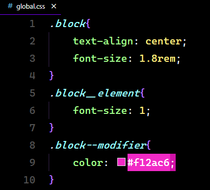
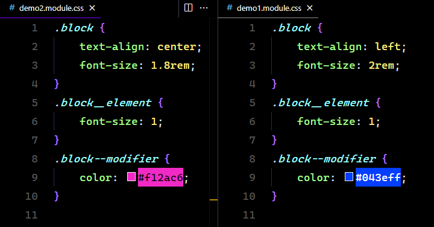
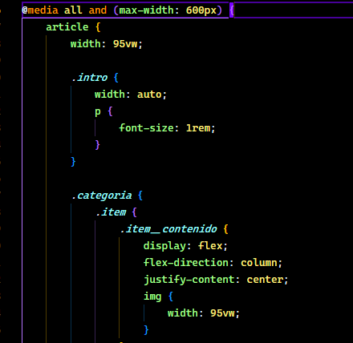
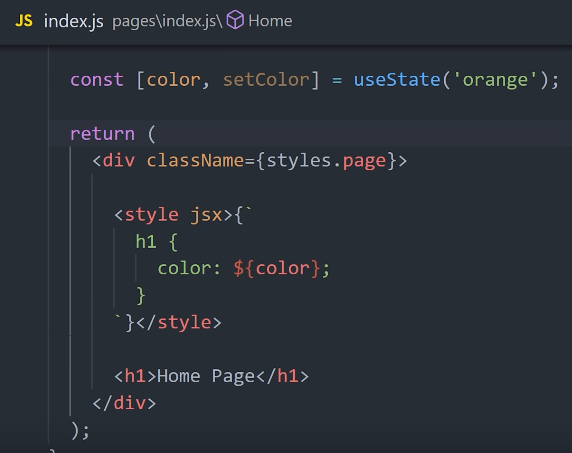
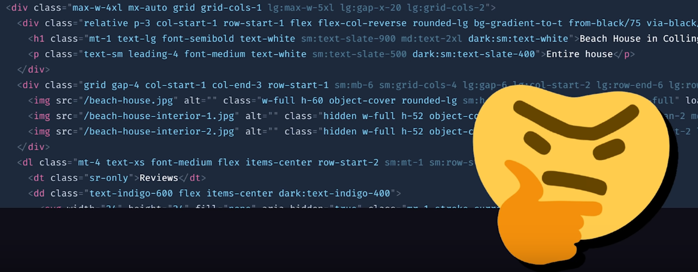

Css EN 2022
Cuando inicias en web development te dicen que tienes que aprender "lo fundamental en css"; pero cuando sales al mundo real te das cuenta de que realmente uno no solo usa css puro para construir una app.

Existen miles de librerias que intentan hacer hacer css mejor, pero hasta ahora no existe una solución universal.
6 maneras de hacer css tolerable
global.css con BEM

| PROS | CONTRAS |
| No escalable | Funciona en proyectos pequeños |
| Dependencia pesada e ineficiente |
css modules
| PROS | CONTRAS |
| Alcance definido | No tiene funciones programáticas |
| Compartir codigo entre componentes |

PRE-Procesadores(SASS - Less - Stylus)

| PROS | CONTRAS |
| Variables, Mixins, Funciones | Completo nuevo lenguage que aprender |
css-en-js
(Styled Components - JSS - Emotion - Styletron)
| PROS | CONTRAS |
| Funciones programáticas | 🤯 |
| Alcance definido | |
| Todo el poder de js en tus manos |

Utility classes
(Tailwind css - Windi css)

| PROS | CONTRAS |
| Rápidamente construir UI | Requiere configuración extra |
| Descarta estilos no usados | HTML complejo |
| No componentes |